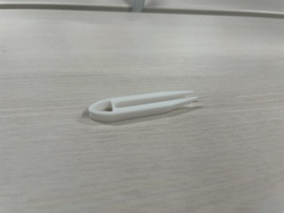
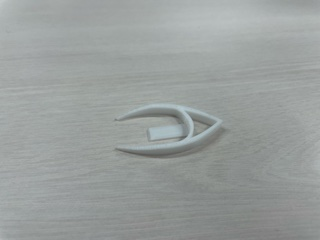
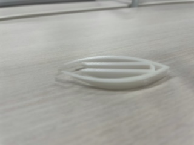

コンセプト
このピンセットは話し合いの中で出た「つまみ食いをするためのピンセット」を元として考えた。
目的としては、お菓子(主にポテトチップス)を食べるときに箸を使うけれど置いておく場所に悩むという問題を解決することだ。
特徴
ポテトチップスを箸で食べるときに発生する問題として
- 箸を置く場所に困る
- 箸をそのまま置くと机が汚れることが多い
こういったような問題を解決するために先が浮くような構図にしたピンセットを思いついた

最初のスケッチ
作成メモ
試作1
最初の試作作品は、細長いデザインにした。しっかり先が浮きつかめるデザインで作ることができた。
しかし、細すぎで実際につかむとなるとほとんどのモノがつかめない、つかむものに近すぎで手が汚れるなどの問題点を発見した。

試作２
次により広い範囲をつかめるデザインに変えたものを作成した。
最初のデザインに加えて真ん中に一本支えをつけることで少し大きめの物でもつかみやすくなるのではないかと考え試した。
しかし、支えの位置が低すぎたために可動域がとても狭い上に、支えとぶつかってしまった。

試作3
試作１と試作２の両方の良いところを重ね合わせたいと考え、二つのピンセットをそのまま合わせるようなデザインで作成することにした。
広い外側に内側に狭い範囲のピンセットを重ね合わせるデザインした。
これまでのデザインの中では一番使いやすかったが、大きさなどの部分で改善できそうな部分はあった。

感想
最後の試作品での二つの物を組み合わせるという部分は授業で考えた部分を生かせた。
しかし、大きさが限られている状態でその大きさを最大限に生かすという所が今回あまりできなかった。